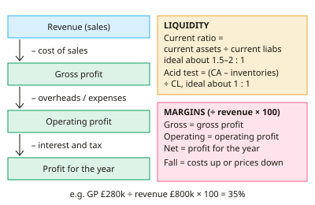

A-level Business Year 13 · Topic 4
Analysing financial performance and competitiveness
This topic is about judging a firm's financial health and competitiveness from its published accounts.
We calculate profitability, liquidity, gearing, efficiency and investor ratios, and then interpret what they really show.
We also measure competitiveness through productivity and unit costs.
- 5 subtopics
- 232 questions
- Free: 4.1 notes and 10 questions
In this topic
- 4.1Profitability and liquidity ratiosFree below · 48 questions
- 4.2Gearing, ROCE and efficiency ratiosOpen in Full Marks · 46 questions
- 4.3Investor ratios: dividend per share, dividend yield, dividend cover and P/EOpen in Full Marks · 23 questions
- 4.4Interpreting published accounts and the limitations of ratio analysisOpen in Full Marks · 55 questions
- 4.5Measuring competitiveness: productivity, unit costs and efficiencyOpen in Full Marks · 60 questions
4.1 · Free notes
Profitability and liquidity ratios

Key points
- Ratio analysis turns accounts into percentages and ratios. Judge them against previous years (trends), competitors (benchmarking) and targets, never in isolation.
- Gross profit margin = gross profit ÷ revenue × 100 (%). It shows how much of each £1 of sales is left after cost of sales. Raise it by increasing prices or cutting direct costs, e.g. cheaper suppliers or less waste.
- Operating profit margin = operating profit ÷ revenue × 100. It also deducts overheads. If the gross margin is steady but the operating margin falls, overheads are rising.
- Profit for the year margin (net profit margin) = profit for the year ÷ revenue × 100. It is measured after interest and tax, so it is affected by financing costs and tax.
- Margins vary by industry. Supermarkets use low margin, high volume, while luxury brands use high margins and low volume. Compare like with like, and note that cutting prices to win sales can reduce margins.
- Liquidity is the ability to pay short-term debts as they fall due. Current ratio = current assets ÷ current liabilities, expressed as x:1. A typical 'ideal' range is about 1.5–2:1.
- Acid test ratio = (current assets – inventories) ÷ current liabilities. Inventories are excluded because they are slow to turn into cash. The ideal is about 1:1.
- A very low ratio risks insolvency and difficulty paying suppliers. A very high ratio can mean idle cash or excess inventory, so resources are not being used productively.
- Profit is not cash. A profitable, fast-growing firm can run out of cash through overtrading, with money tied up in inventory and receivables.
- Improve liquidity by chasing receivables, reducing inventory, negotiating longer payables terms, sale and leaseback, or raising long-term finance.
- Limitations: figures are historic, can be altered by window dressing, vary with seasonality and accounting policies, and ignore qualitative factors such as brand, staff and market conditions.
- Exam tip: calculate, compare with a benchmark, give a reason for the change, then evaluate (e.g. 'a 0.8:1 current ratio is less worrying for a supermarket that takes cash daily').
In more detail
- Worked comparison: Firm A has revenue £800k, gross profit £320k and operating profit £64k → margins of 40% and 8%. Firm B has £500k, £150k and £50k → 30% and 10%. A earns more on its goods, but B controls overheads better.
- Reading liquidity: a current ratio steady at 1.5:1 while the acid test falls from 1.0:1 to 0.6:1 means more of the current assets are now tied up in stock.
- Industry norms: supermarkets often run current ratios below 1 safely, because they sell stock for cash quickly and pay suppliers later.
- Profit vs cash: a rising operating margin alongside a falling acid test is a classic sign of overtrading.
Practice
Profitability and liquidity ratios: 10 questions
Pick an answer to check it, or open the answer for the explanation.
1. Revenue is £800,000 and cost of sales is £520,000. What is the gross profit margin?
- 54%
- 28%
- 65%
- 35%
Show answer
D: 35%. Gross profit = 800,000 – 520,000 = £280,000. Margin = 280,000 ÷ 800,000 × 100 = 35%.
2. A firm has revenue of £600,000 and operating profit of £60,000. What is its operating profit margin?
- 10%
- 9%
- 90%
- 1%
Show answer
A: 10%. Operating profit margin = operating profit ÷ revenue × 100 = 60,000 ÷ 600,000 × 100 = 10%.
3. Current assets are £450,000, including inventories of £150,000. Current liabilities are £300,000. What is the acid test ratio?
- 1.0:1
- 0.5:1
- 1.5:1
- 2.0:1
Show answer
A: 1.0:1. Acid test = (450,000 – 150,000) ÷ 300,000 = 1.0:1. The current ratio would be 1.5:1.
4. A manufacturer reports a current ratio of 0.6:1. What is the most likely concern?
- It may struggle to pay short-term debts
- It is highly profitable
- It holds too much idle cash
- Its gearing is too high
Show answer
A: It may struggle to pay short-term debts. A current ratio below 1 means current liabilities exceed current assets, so there is a liquidity risk. It says nothing directly about profit or gearing.
5. Which action would most directly increase a firm's gross profit margin?
- Negotiating cheaper raw materials
- Cutting the advertising budget
- Repaying a bank loan
- Reducing head-office salaries
Show answer
A: Negotiating cheaper raw materials. Cheaper materials lower cost of sales, raising gross profit. Advertising and salaries are overheads, and loan repayment affects interest, so none of these change gross profit.
6. Which item is deducted from current assets when calculating the acid test ratio?
- Bank balances
- Cash
- Trade receivables
- Inventories
Show answer
D: Inventories. Inventories are excluded because they may take time to sell and convert into cash. Receivables and cash are kept in.
7. Revenue rises from £2.0m to £2.5m and gross profit from £800k to £875k. What happened to the gross margin?
- Fell from 40% to 35%; cost of sales rose faster than revenue
- Fell from 35% to 30%; overheads rose
- Rose from 40% to 35%; cost of sales rose slower than revenue
- Stayed at 40%; costs and revenue grew equally
Show answer
A: Fell from 40% to 35%; cost of sales rose faster than revenue. 800÷2,000 = 40%; 875÷2,500 = 35%. Gross profit rose by less than revenue, so cost of sales grew faster.
8. What is meant by 'window dressing' in accounts?
- Making accounts look better, e.g. by delaying payments at year end
- Inventing sales that never happened
- Moving profits overseas to cut tax
- Improving shop displays to lift sales
Show answer
A: Making accounts look better, e.g. by delaying payments at year end. Window dressing is a legal presentation of year-end figures to flatter ratios such as liquidity. It is not fraud, and it is unrelated to retail displays.
9. A fast-growing profitable firm cannot pay suppliers because cash is tied up in inventory and receivables. This is best described as:
- Overtrading
- Window dressing
- Dis-economies of scale
- Capital expenditure
Show answer
A: Overtrading. Overtrading is expanding faster than working capital allows. Profit exists but cash is short, so the firm has a liquidity problem.
10. A retailer has a current ratio of 3.5:1. Which is the most valid evaluation?
- Gearing must be low
- The firm is certain to become insolvent
- Profit margins must be high
- Resources may be tied up idly in inventory or cash
Show answer
D: Resources may be tied up idly in inventory or cash. A very high ratio can suggest inefficient use of assets, such as excess inventory or idle cash. It does not prove insolvency, low gearing or high margins.
Keep going in Full Marks
Full Marks has 48 questions on Profitability and liquidity ratios (38 more than here), set out in practice levels. You also get notes and 3D models for all 5 subtopics of Analysing financial performance and competitiveness, plus games, timed exams and past papers.
On your exam board
- AQATopic 1.1: Analysing the strategic position: mission, objectives and internal position
- EdexcelTopic 3.5: Assessing competitiveness
- CambridgeTopic 10: Finance and accounting
Not in the OCR specification.